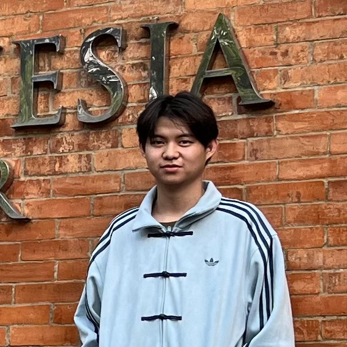
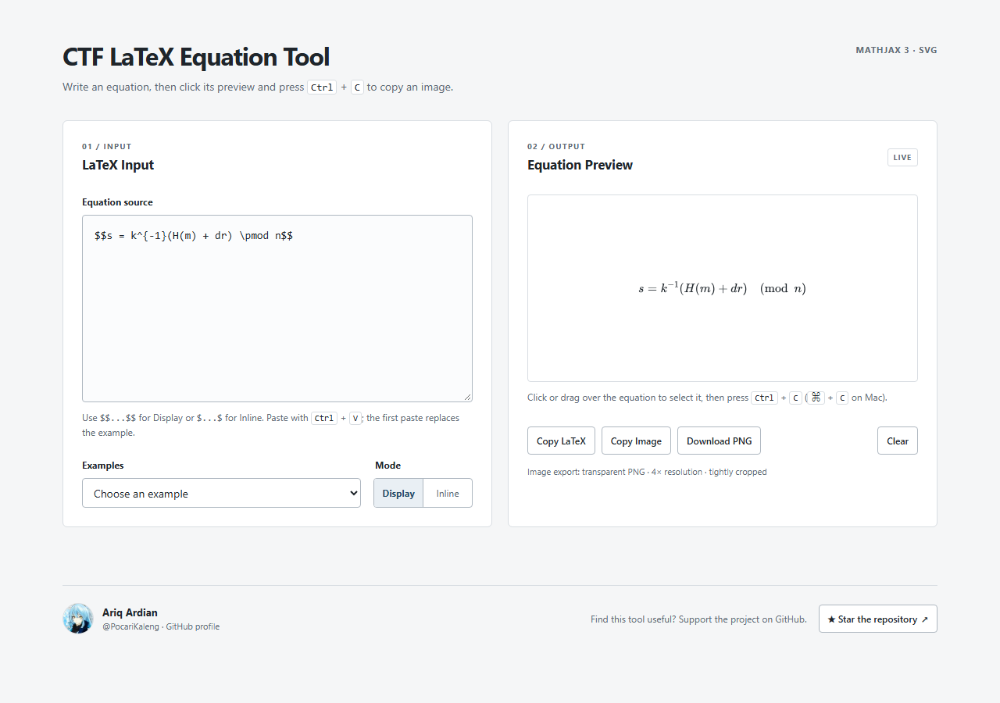
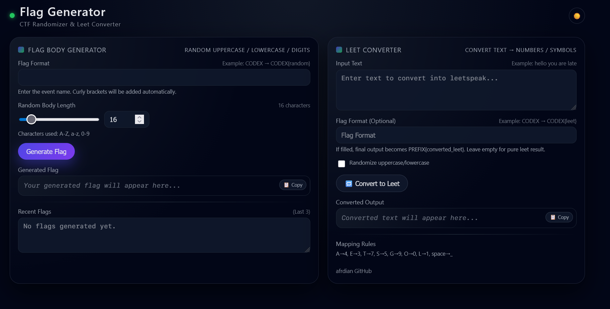

A selection of browser projects and tools I’ve shared on GitHub.
Client-side file encryption with a local vault and digital-signature demo.


Write, preview, and export equations for CTF and cryptography writeups.

Generate random CTF flags and convert text into leetspeak.
Eleven competition reports documenting challenges and their solutions.